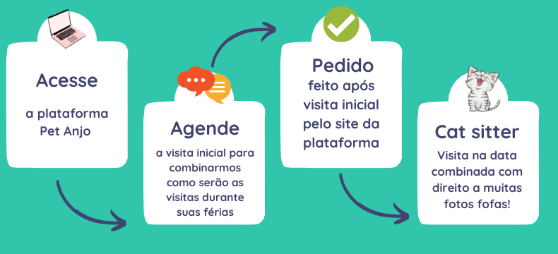

Como funciona?




Muitas brincadeiras

Administração de medicamentos, se necessário

Cantinho organizado para a soneca de mais tarde

Potinhos limpos, água trocada e comida reposta

Caixinhas limpas

Acompanhe tudo por fotos e relatório

Olá, meu nome é Natália!
Sou médica veterinária e cuido de gatinhos como cat sitter há 7 anos.
Estou sempre rodeada de animais, seja na minha vida pessoal ou na profissional. Eles são a minha vida e vou amar cuidar do seu gatinho para que ele não se sinta sozinho.
Vamos nos divertir muito!! E garanto que você vai receber relatórios com fotos lindas, para acompanhar tudo sobre o seu pet!!
Contrate aqui:
Atendimentos na região da Consolação, Higienópolis, Santa Cecília, Perdizes, Pinheiros e regiões próximas em São Paulo/SP
Para outras cidades e regiões, clique aqui.